A cozy valley from the cover
A warm pink-and-gold sky, meadow flowers, terraced waterfalls and the wisteria cottage bring the cover’s fantasy setting into the playable 3D world.
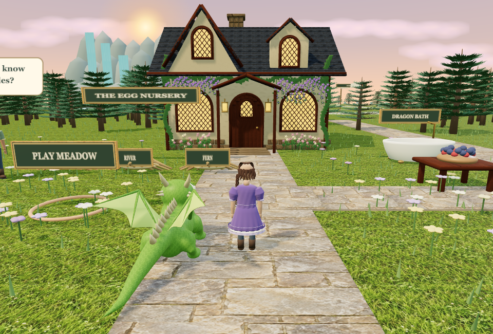
Animated captures from the game’s actual 3D renderer. Customize your kid or adult keeper, then raise your dragon: one day as an egg, five days as a baby, then ten days as an adult before a heartfelt goodbye.
A warm pink-and-gold sky, meadow flowers, terraced waterfalls and the wisteria cottage bring the cover’s fantasy setting into the playable 3D world.

The illustrated cover has a gentle glow and drifting sparkles. This is a recording of its actual website card.

Tap a place or object to walk there. Swipe to take a short step, or drag and hold to keep walking and steer; lift your finger to stop. At training, tap or walk into one of three labeled circles: Target practice, Flying or Speed. Each circle starts its own activity.
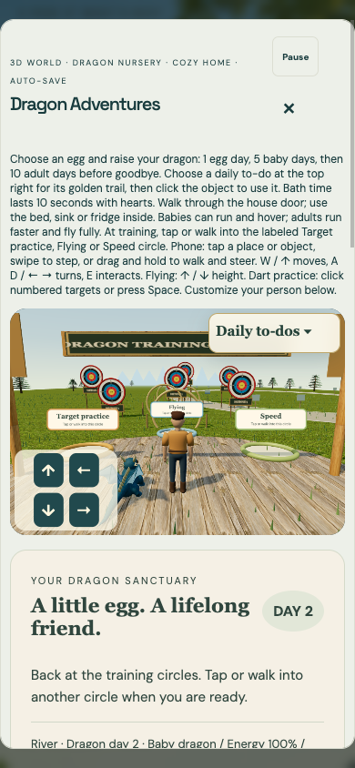
Buy a one-race pass under Gameplay in the shop, then use Gameplay · Sky Race in Dragon Adventures. Start on sky posts with four computer riders, follow the golden line through sixteen energy hoops, and use two fire, water or leaf attacks to slow rivals ahead. Steer and climb with arrows or drag; tap the next hoop or Aim at next hoop to line up.
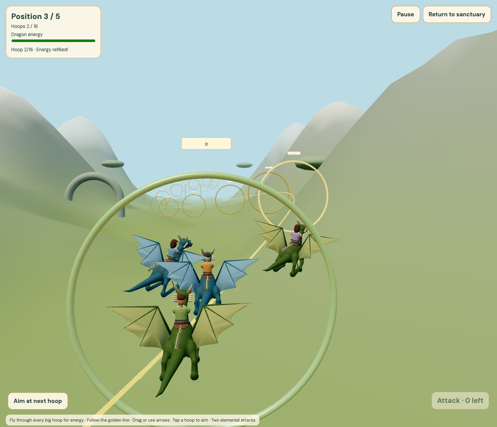
The top three finishers stand on their winners’ platforms. Return to the sanctuary when you are done; buy another pass to race again.
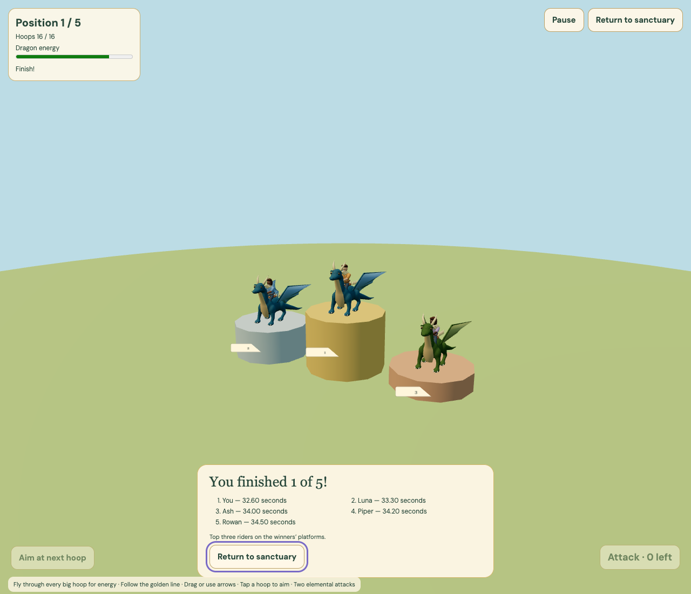
Choose a to-do at the top right to reveal its sparkling golden trail. Click the outdoor bath for ten seconds of bubbles and hearts, the berries to feed, your dragon to play, or follow the marked walking loop. Completed needs darken until the next morning. The brushing trail continues through the house to the sink.
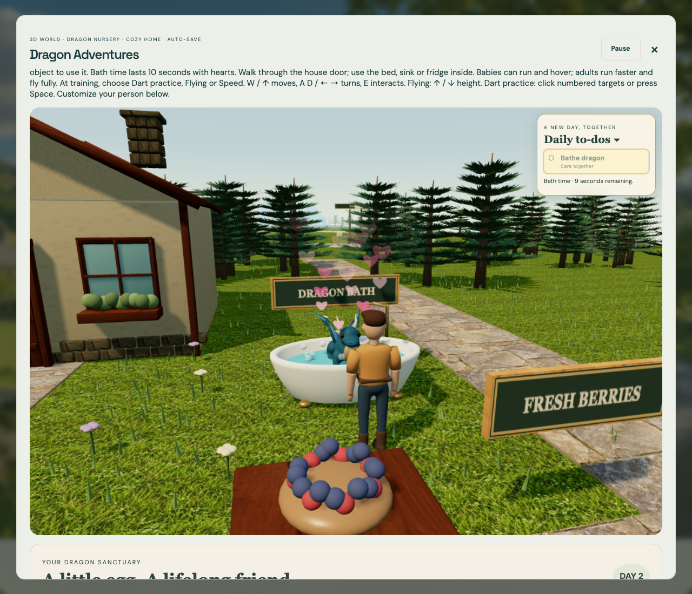
All six targets use clear colored scoring rings and numbers. Red dragons shoot fire, blue dragons shoot water, and green dragons shoot leaf balls.
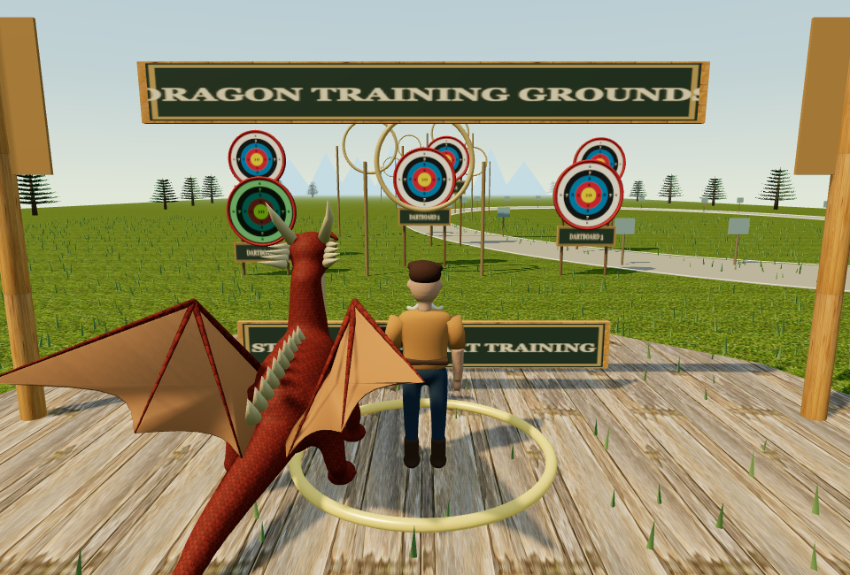
Both dragon ages have the cover’s round cheeks, gentle dark eyes, soft blinks, a small closed smile, small scales, four articulated legs and flexible, scalloped wings. The adult keeps the same adorable face and grows only a little bigger. Hatch on day 2, hover and speed-train as a baby, then reach adulthood on day 7.
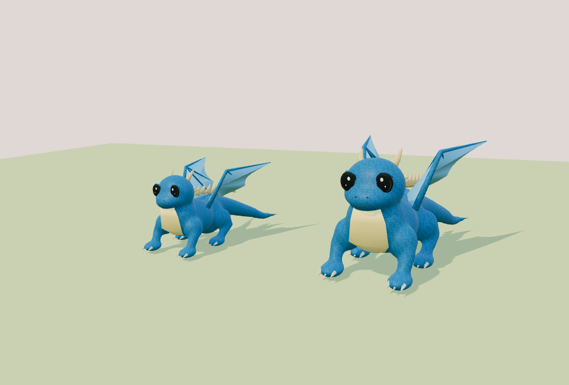
Watch both ages walk and fly in the interactive dragon preview →
A softer, expressive face balances realistic proportions with a gentle cartoon style. Dresses and coats follow the torso and hips, trousers have a connected surface, and seams stay together through walking and riding. Clothing has sculpted folds and gathered hems, with woven fabric, soft leather, and metallic buttons that respond to the sanctuary light. Choose Kid or Adult, then try 36 hairstyles and 25 outfits: bobs, waves, braids, ponytails, curls and locs; hoodies, denim, cargo clothes, coats and fantasy dresses. Choose your own skin, eyes, hair, clothing and ribbon colors. Your person walks, rides and waves with the same rig in the customizer and game.
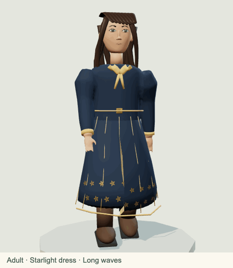
See the keeper’s face close up
Open the interactive 3D keeper studio → Turn the person, zoom in on their face, and try every hairstyle and outfit.
Choose Dragon training from the daily to-dos in the top-right corner to reveal the sparkling yellow line. Follow it past the forest to the training clearing with its three labeled activity circles.

Tap or walk into the labeled Target practice, Flying or Speed circle to start that activity. From day 7, mount a smaller, faster dragon and steer, climb and descend through a longer 14-ring course. Baby dragons use five low hover hoops and a slower speed track. Choose numbered elemental dart practice for water, fire or leaf balls, or race every speed-track checkpoint to the checkered finish for a personal-best time. The last flying ring and finish ribbon return you to that activity’s circle, and low rails keep speed training on the track.

The playable cottage follows the cover illustration: blue slate roofs, projecting gables, glowing arched windows, a wooden arched door, brass lanterns, climbing ivy and hanging purple flowers. The doorway leads to your furnished home and its bed, sink and fridge.
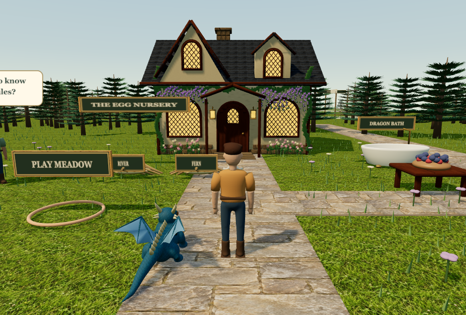
Walk into your house and look for the wooden dresser, mirror and DRESSER sign near the front-left wall. Walk up to it, click or tap it, or press E nearby to open the person designer right on screen. Choose your appearance, then use Back to the house or Escape to continue where you were. Your changes save automatically and appear in the customizer below the game too. The rules keeper beside the eggs explains both ways to dress your person.
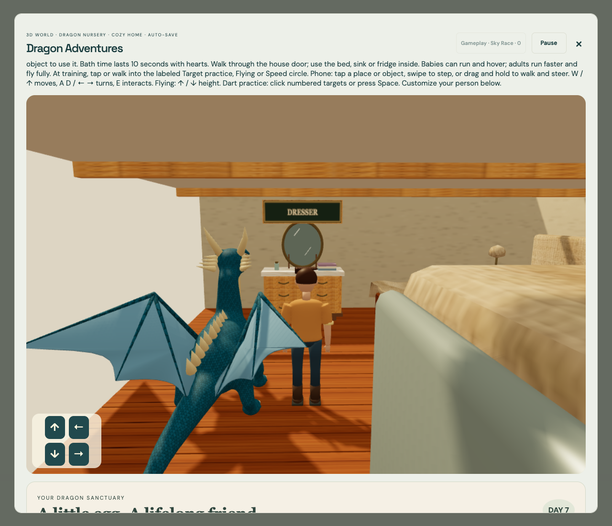
The timber cottage has individual slate roof tiles, stone foundations and framed windows. Inside are wooden floorboards, draped bedding, curtains, a recessed washbasin and a detailed fridge. Walk through the cottage doorway to enter. Walk into the bed to sleep, up to the sink to start running water and brush your dragon’s dirty teeth, or up to the fridge for food matching.  Each mini-game lasts exactly 10 seconds. Brushing removes dirt only where you rub; every food round has exactly one food appearing in both rows.
Each mini-game lasts exactly 10 seconds. Brushing removes dirt only where you rub; every food round has exactly one food appearing in both rows.
The small energy bar has a frowny face and a smiley face. It starts green, drops through yellow as you finish daily needs, and turns red when every to-do is complete. Your keeper gets sleepy eyes and asks whether to go to bed. Go to Bed walks you home and into bed; Ignore lets you keep playing. Each training activity allows two completed rounds per day. Sleeping restores green energy and resets those limits.
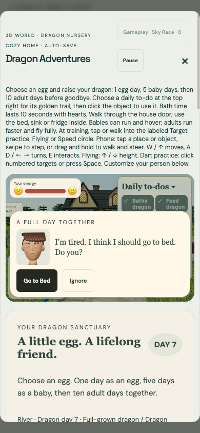
After one egg day, five baby days and ten adult days, waking on dragon day 17 brings a note: It is time to say goodbye to your dragon. Go outside and give one last pet. Your dragon flies into the distance while you wave; New Game appears after the farewell.
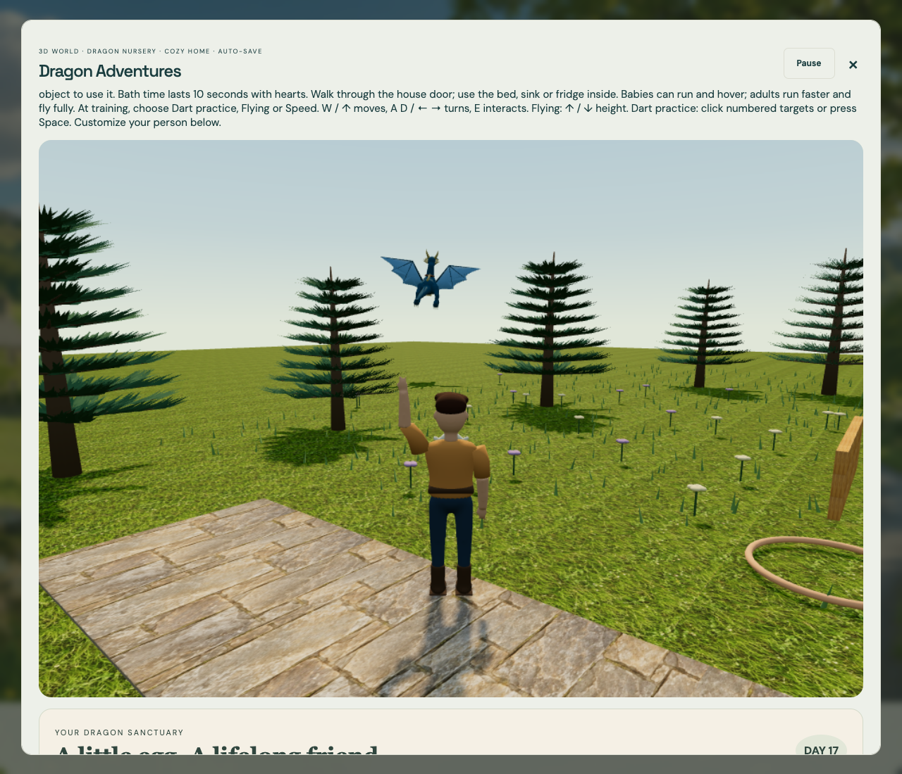